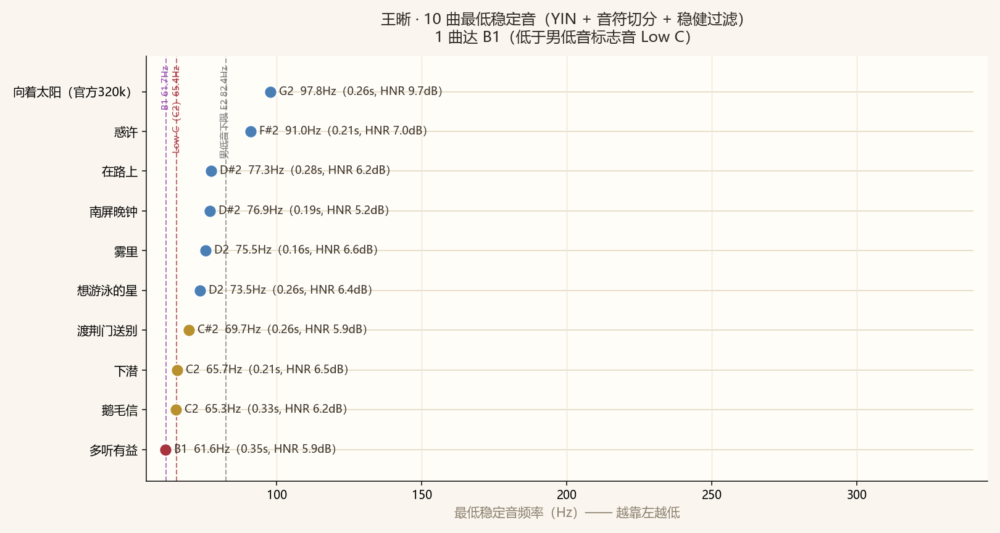
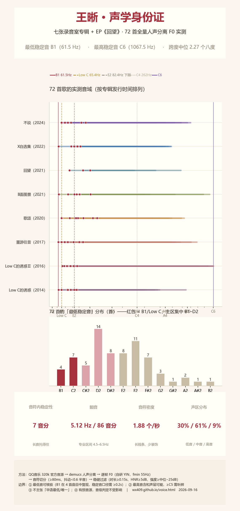
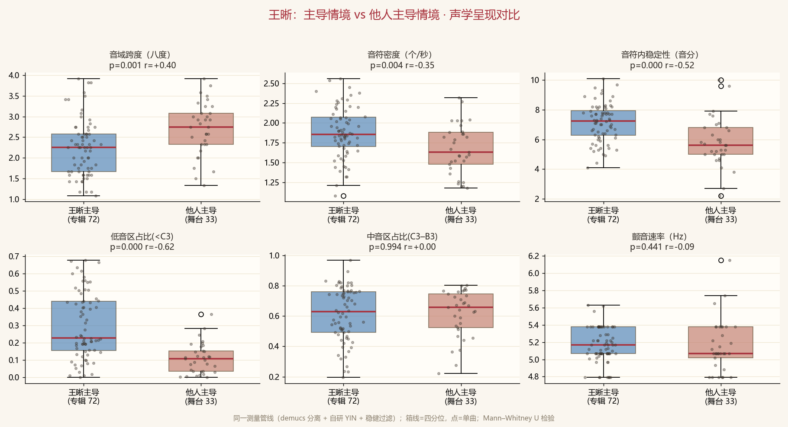
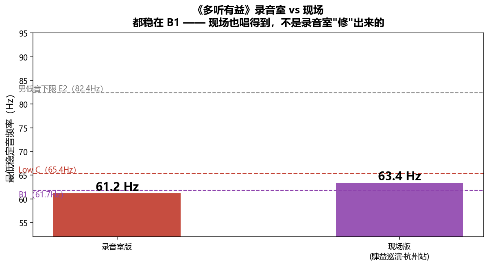

人声分离 F0 分析 · 低音主区 B1–D2（61.6–75.5Hz） · 更新 2026-09-09
| 曲目 | 音级 | 频率 | 时长/HNR | 复核状态 | 依据 |
|---|---|---|---|---|---|
| 知晓 | B1 | 61.9 Hz | 0.28s / HNR 5.1dB | 🟡 已取证 | 谱列解释度 1.00 vs 0.81 |
| 渔光曲 | B1 | 61.6 Hz | 0.23s / HNR 5.7dB | 🟡 已取证 | 谱列解释度 1.00 vs 0.81 |
| 多听有益 | B1 | 61.6 Hz | 0.33s / HNR 5.9dB | ✅ 双引擎一致 | 多配置 CREPE 与 YIN 一致 |
| 静止了的夜晚 | B1 | 61.5 Hz | 0.44s / HNR 5.8dB | 🟡 已取证 | 谱列解释度 1.00 vs 0.79 |

| 曲目 | 最低稳定音 | 频率 | 时长/HNR | 素材来源 | 复核状态 |
|---|---|---|---|---|---|
| 多听有益 | B1 | 61.6 Hz | 0.35s / HNR 5.9dB | 录音室 MV | ✅ 双引擎一致 |
| 鹅毛信 | C2（Low C） | 65.3 Hz | 0.33s / HNR 6.2dB | 录音室 | ⚪ 待复核 |
| 下潜 | C2（Low C） | 65.7 Hz | 0.21s / HNR 6.5dB | 现场（待确认王晰原声） | 🟡 已取证 |
| 渡荆门送别 | C#2 | 69.7 Hz | 0.26s / HNR 5.9dB | 央视《经典咏流传》 | 🟡 已取证 |
| 想游泳的星 | D2 | 73.5 Hz | 0.26s / HNR 6.4dB | 录音室 | ✅ 双引擎一致 |
| 雾里 | D2 | 75.5 Hz | 0.16s / HNR 6.6dB | 央视网络春晚（三人合唱） | ✅ 双引擎一致 |
| 南屏晚钟 | D#2 | 76.9 Hz | 0.19s / HNR 5.2dB | 录音室 | ✅ 双引擎一致 |
| 在路上 | D#2 | 77.3 Hz | 0.28s / HNR 6.2dB | 录音室 | ✅ 双引擎一致 |
| 惑许 | F#2 | 91.0 Hz | 0.21s / HNR 7.0dB | 录音室 | ✅ 双引擎一致 |
| 向着太阳（官方320k） | G2 | 97.8 Hz | 0.26s / HNR 9.7dB | VITAS×王晰合唱 | 🟡 已取证 |
复核状态：✅双引擎一致 ｜ 🟡已取证（谱列 + 四轨归属支持）｜ ⚪待复核（暂不作结论依据）。
⚪ 的展示政策（2026-09-10 定）：⚪ 值照常展示但三不许——不进入任何汇总计数、
不进入跨版本统计、不进入对外引用的句子。上表「达 B1 / 达 C2」等计数与页首措辞均已按此口径扣除 ⚪。
另：本表「触达音」（pYIN v1 短读）已全部转入待复核，未与本表并列展示。
⚠️ 交叉复核修正：《向着太阳》的最低音经 CREPE（CNN 音高估计）+ 六轨分离复核， 原 YIN 读数（t=72.2s 的 D#2 78.1Hz）为 1/3 次谐波错误——该时刻人声实为 A#3（≈231Hz）。 全曲最低人声为 G2 97.8Hz（t=33.4s，0.26s，HNR 9.7dB）。方法与本表其余曲目一致（同一套音符切分与稳健过滤）。
| 版本 | 最低稳定音 | 频率 | 时间点 | 素材 | 可信度 | 说明 |
|---|---|---|---|---|---|---|
| 录音室版（MV） | B1 | 61.6 Hz | 153.3s | BV1zG411f72T | 高 | 官方音源 + 人声分离实测 |
| 杭州站现场（4K 直拍） | B1 | 63.4 Hz | 114.6s | BV1ArKxe7E8H | 高 | 与录音室同音级，差 1.8Hz |
| 四巡现场直拍 | D2 | 74.9 Hz | 237.3s | BV1Ab4y1g7Wj | 中 | 手机直拍，音质受限 |
| 武汉收官场 | A2 | 111.6 Hz | 35.7s | BV1iWtUefEkm | 低 | 音频处理失真，仅作参考 |
口径：杭州站现场实测最低 B1（不写成「所有现场都能到 B1」）；四巡直拍为手机录制、武汉收官场音频处理失真，仅作参考。

| 专辑 | 曲数 | 最低音* | 出自 | 最高音 ⚠️ | 出自 | 平均跨度（八度） | 该专辑最低音复核状态 |
|---|---|---|---|---|---|---|---|
| Low C的诱惑Ⅱ | 12 | C2 | 多年以后 | C6 | 月光 | 2.63 | 🟡 已取证 |
| 不说 | 8 | C2 | 鹅毛信 | F5 | 勿扰 | 2.63 | ⚪ 待复核 |
| 重游往昔 | 8 | B1 | 静止了的夜晚 | G5 | 茕茕 | 2.62 | 🟡 已取证 |
| 歌颂 | 10 | C2 | 雪地里寄不出的求救信 | D#5 | Come to Me | 2.27 | ⚪ 待复核 |
| X自选集 | 9 | B1 | 多听有益 | B4 | 不需要结果 | 2.21 | ✅ 双引擎一致 |
| B面图景 | 10 | B1 | 知晓 | C#5 | 惑许 | 2.02 | 🟡 已取证 |
| 回望 | 3 | D#2 | 无人岛上 | D5 | 不能靠近的朋友 | 2.01 | ⚪ 未复核 |
| Low C的诱惑 | 12 | B1 | 渔光曲 | E5 | 当爱已成往事 | 1.91 | 🟡 已取证 |
| 专辑 | 曲目 | 最低音 | Hz | 最高音 | Hz | 跨度 | 音符 | 密度 | 稳定性 | 颤音 | 复核状态 |
|---|---|---|---|---|---|---|---|---|---|---|---|
| B面图景 | 知晓 | B1 | 61.9 | E4 | 329 | 2.41 | 417 | 1.58 | 8 | 5.1/83 | 🟡 已取证 |
| B面图景 | 倒叙 | D2 | 73.4 | C#4 | 274 | 1.90 | 459 | 2.28 | 7 | 5.2/87 | 🟡 已取证 |
| B面图景 | 哑光 | E2 | 81.9 | C4 | 262 | 1.68 | 510 | 2.01 | 7 | 5.0/79 | ⚪ 未复核 |
| B面图景 | 悬念 | E2 | 82.7 | C#4 | 284 | 1.78 | 490 | 2.40 | 8 | 5.2/90 | ⚪ 未复核 |
| B面图景 | 分岔 | F2 | 86.2 | B4 | 497 | 2.53 | 478 | 1.96 | 9 | 5.1/95 | ⚪ 未复核 |
| B面图景 | 玩笑 | F#2 | 90.9 | E4 | 327 | 1.85 | 358 | 2.20 | 7 | 5.1/73 | ⚪ 未复核 |
| B面图景 | 惑许 | F#2 | 91.0 | C#5 | 556 | 2.61 | 477 | 2.54 | 8 | 5.1/95 | ✅ 双引擎一致 |
| B面图景 | 时空 | F#2 | 91.2 | C#4 | 277 | 1.60 | 589 | 2.45 | 8 | 4.8/81 | ✅ 双引擎一致 |
| B面图景 | 游离 | F#2 | 91.7 | D4 | 295 | 1.69 | 655 | 2.24 | 8 | 5.1/99 | ⚪ 未复核 |
| B面图景 | 轻信 | A2 | 112.7 | B4 | 491 | 2.12 | 395 | 2.29 | 7 | 5.4/72 | ✅ 双引擎一致 |
| Low C的诱惑 | 渔光曲 | B1 | 61.6 | F#3 | 187 | 1.60 | 414 | 1.74 | 8 | 5.4/93 | 🟡 已取证 |
| Low C的诱惑 | 夜半歌声 | D2 | 72.3 | A3 | 221 | 1.61 | 319 | 1.68 | 8 | 5.2/110 | ✅ 双引擎一致 |
| Low C的诱惑 | 爱情 | D2 | 72.3 | A#3 | 234 | 1.69 | 466 | 1.72 | 9 | 5.4/97 | ⚪ 未复核 |
| Low C的诱惑 | 千言万语 | D2 | 73.0 | A3 | 221 | 1.60 | 397 | 1.84 | 6 | 5.4/83 | ✅ 双引擎一致 |
| Low C的诱惑 | 绿岛小夜曲 | D2 | 73.2 | D4 | 291 | 1.99 | 431 | 2.06 | 6 | 5.6/87 | ⚪ 未复核 |
| Low C的诱惑 | 当爱已成往事 | D2 | 74.9 | E5 | 642 | 3.10 | 578 | 1.81 | 6 | 5.2/70 | ✅ 双引擎一致 |
| Low C的诱惑 | 我的心里只有你没有他 | D2 | 75.2 | G#4 | 421 | 2.48 | 379 | 2.07 | 5 | 5.4/93 | ⚪ 未复核 |
| Low C的诱惑 | 南屏晚钟 | D#2 | 76.9 | D#4 | 311 | 2.01 | 570 | 2.56 | 7 | 5.2/89 | ✅ 双引擎一致 |
| Low C的诱惑 | 至少还有你 | E2 | 82.3 | G4 | 396 | 2.27 | 570 | 2.02 | 6 | 5.2/76 | ⚪ 未复核 |
| Low C的诱惑 | 晚风 | F2 | 85.6 | D4 | 292 | 1.77 | 412 | 1.53 | 6 | 5.4/78 | ⚪ 未复核 |
| Low C的诱惑 | 再回首 | F2 | 86.9 | G3 | 196 | 1.18 | 414 | 1.91 | 8 | 5.4/113 | ⚪ 未复核 |
| Low C的诱惑 | 忘不了 | G2 | 97.3 | D4 | 292 | 1.59 | 325 | 1.21 | 5 | 5.3/89 | ✅ 双引擎一致 |
| Low C的诱惑Ⅱ | 多年以后 | C2 | 65.8 | A4 | 435 | 2.72 | 703 | 2.07 | 7 | 5.4/87 | 🟡 已取证 |
| Low C的诱惑Ⅱ | 乌兰巴托的夜晚 | C2 | 66.3 | G3 | 196 | 1.57 | 368 | 1.32 | 8 | 5.4/99 | ✅ 双引擎一致 |
| Low C的诱惑Ⅱ | 贝加尔湖畔 | C#2 | 68.3 | A3 | 220 | 1.69 | 379 | 1.78 | 8 | 5.6/108 | ⚪ 未复核 |
| Low C的诱惑Ⅱ | 葬心 | C#2 | 69.0 | C6 | 1055 | 3.93 | 447 | 1.39 | 10 | 5.4/90 | ✅ 双引擎一致 |
| Low C的诱惑Ⅱ | 几多愁 | C#2 | 69.5 | G5 | 802 | 3.53 | 477 | 2.04 | 6 | 5.0/82 | ⚪ 未复核 |
| Low C的诱惑Ⅱ | 月光 | D2 | 72.2 | C6 | 1065 | 3.88 | 672 | 2.08 | 6 | 5.4/88 | ⚪ 未复核 |
| Low C的诱惑Ⅱ | 月圆花好 | D2 | 72.2 | A3 | 218 | 1.59 | 455 | 2.18 | 7 | 5.4/86 | ✅ 双引擎一致 |
| Low C的诱惑Ⅱ | 如梦令 | D2 | 72.6 | C6 | 1042 | 3.84 | 462 | 1.92 | 8 | 5.4/93 | ⚪ 未复核 |
| Low C的诱惑Ⅱ | 他不爱我 | D2 | 73.5 | A3 | 220 | 1.58 | 424 | 1.85 | 7 | 5.6/101 | ✅ 双引擎一致 |
| Low C的诱惑Ⅱ | 重庆野玫瑰 | D#2 | 76.8 | G3 | 196 | 1.35 | 408 | 1.55 | 8 | 5.1/85 | ⚪ 未复核 |
| Low C的诱惑Ⅱ | 叶塞尼亚 | D#2 | 77.6 | G4 | 392 | 2.34 | 374 | 1.41 | 8 | 5.1/89 | ⚪ 未复核 |
| Low C的诱惑Ⅱ | 微风细雨 | E2 | 81.6 | B5 | 960 | 3.56 | 395 | 1.88 | 6 | 5.0/68 | ⚪ 未复核 |
| X自选集 | 多听有益 | B1 | 61.6 | B4 | 490 | 2.99 | 356 | 1.45 | 5 | 5.1/60 | ✅ 双引擎一致 |
| X自选集 | Crystal Store | D#2 | 77.8 | B4 | 491 | 2.66 | 330 | 1.62 | 7 | 4.8/75 | ⚪ 未复核 |
| X自选集 | 小河 | E2 | 81.9 | C4 | 262 | 1.68 | 470 | 2.05 | 8 | 5.4/110 | ⚪ 未复核 |
| X自选集 | 猫模狗样 | E2 | 82.3 | F#4 | 369 | 2.17 | 390 | 1.74 | 4 | 5.1/82 | ⚪ 未复核 |
| X自选集 | 微醺23点08分 | F2 | 86.5 | C4 | 262 | 1.60 | 379 | 1.96 | 6 | 4.8/60 | ⚪ 未复核 |
| X自选集 | 不需要结果 | F2 | 87.9 | B4 | 493 | 2.49 | 439 | 1.82 | 8 | 5.3/81 | ⚪ 未复核 |
| X自选集 | 是你 | F2 | 87.9 | A#4 | 463 | 2.40 | 479 | 1.82 | 6 | 5.1/74 | ⚪ 未复核 |
| X自选集 | 偏偏 | F#2 | 92.3 | E4 | 330 | 1.84 | 417 | 1.84 | 6 | 5.2/82 | ⚪ 未复核 |
| X自选集 | 朝凤 | G2 | 98.8 | G#4 | 415 | 2.07 | 491 | 2.11 | 5 | 5.3/75 | ⚪ 未复核 |
| 不说 | 鹅毛信 | C2 | 65.3 | F4 | 348 | 2.42 | 308 | 1.44 | 7 | 4.8/73 | ⚪ 待复核 |
| 不说 | 勿扰 | C2 | 65.6 | F5 | 700 | 3.41 | 353 | 1.32 | 6 | 4.8/80 | ⚪ 待复核 |
| 不说 | 住口 | C#2 | 69.3 | F#4 | 368 | 2.41 | 456 | 2.26 | 7 | 5.1/84 | ⚪ 未复核 |
| 不说 | 在路上 | D#2 | 77.3 | E5 | 663 | 3.10 | 345 | 1.90 | 5 | 5.1/65 | ✅ 双引擎一致 |
| 不说 | 无尽的夜里 | D#2 | 77.6 | A#4 | 465 | 2.58 | 435 | 1.87 | 4 | 4.8/92 | ⚪ 待复核 |
| 不说 | 祝我们随遇而安 | F2 | 85.3 | A4 | 440 | 2.37 | 587 | 2.38 | 9 | 5.1/104 | ⚪ 未复核 |
| 不说 | 雷美替胺 | F#2 | 94.2 | B4 | 493 | 2.39 | 464 | 1.83 | 8 | 5.1/91 | ⚪ 未复核 |
| 不说 | 明白 | G#2 | 101.3 | C5 | 522 | 2.36 | 461 | 2.15 | 6 | 5.2/82 | ⚪ 未复核 |
| 回望 | 无人岛上 | D#2 | 77.9 | B3 | 249 | 1.68 | 482 | 1.99 | 10 | 5.1/95 | ⚪ 未复核 |
| 回望 | 不能靠近的朋友 | G2 | 96.8 | D5 | 586 | 2.60 | 612 | 1.76 | 7 | 4.8/67 | ⚪ 未复核 |
| 回望 | 微光之名 | A2 | 110.5 | F#4 | 368 | 1.74 | 515 | 2.35 | 8 | 5.0/81 | ⚪ 未复核 |
| 歌颂 | 雪地里寄不出的求救信 | C2 | 65.4 | E4 | 331 | 2.34 | 437 | 1.80 | 7 | 5.1/80 | ⚪ 待复核 |
| 歌颂 | 偏执 | C2 | 65.8 | B4 | 494 | 2.91 | 459 | 1.94 | 5 | 5.4/74 | 🟡 已取证 |
| 歌颂 | 云一定知道 | D#2 | 75.7 | A#4 | 468 | 2.63 | 438 | 1.52 | 7 | 5.1/79 | ⚪ 未复核 |
| 歌颂 | Come to Me | E2 | 83.8 | D#5 | 623 | 2.89 | 388 | 1.44 | 8 | 5.2/88 | ✅ 双引擎一致 |
| 歌颂 | 歌颂 | F2 | 85.2 | D5 | 590 | 2.79 | 402 | 1.86 | 8 | 5.1/94 | ⚪ 未复核 |
| 歌颂 | 你 | F2 | 86.1 | D#4 | 318 | 1.88 | 433 | 1.64 | 8 | 5.2/86 | ✅ 双引擎一致 |
| 歌颂 | 怂 | F2 | 88.2 | D4 | 296 | 1.74 | 601 | 2.20 | 7 | 5.1/94 | ⚪ 未复核 |
| 歌颂 | 王牌就是我 | G2 | 97.5 | G4 | 398 | 2.03 | 373 | 1.59 | 5 | 5.1/68 | ⚪ 未复核 |
| 歌颂 | 等一等昨天 | A#2 | 116.1 | D#5 | 606 | 2.38 | 521 | 1.90 | 5 | 5.4/81 | ⚪ 未复核 |
| 歌颂 | 双鱼 | B2 | 125.6 | C4 | 263 | 1.07 | 457 | 1.65 | 7 | 5.4/86 | ⚪ 未复核 |
| 重游往昔 | 静止了的夜晚 | B1 | 61.5 | D4 | 294 | 2.26 | 571 | 2.21 | 9 | 5.1/99 | 🟡 已取证 |
| 重游往昔 | 晚风暖暖 | C2 | 65.3 | C4 | 264 | 2.01 | 636 | 2.31 | 7 | 5.0/86 | ⚪ 待复核 |
| 重游往昔 | 下沉 | C#2 | 69.2 | E4 | 334 | 2.27 | 240 | 1.08 | 10 | 5.0/104 | ⚪ 未复核 |
| 重游往昔 | 重游往昔 | D2 | 73.1 | B4 | 495 | 2.76 | 405 | 1.80 | 9 | 5.1/86 | 🟡 已取证 |
| 重游往昔 | 茕茕 | D2 | 73.4 | G5 | 787 | 3.42 | 335 | 1.72 | 9 | 5.2/102 | ⚪ 未复核 |
| 重游往昔 | 你要忘了我 | E2 | 81.4 | C5 | 525 | 2.69 | 454 | 1.71 | 8 | 5.4/86 | ⚪ 未复核 |
| 重游往昔 | 好好说再见 | F#2 | 90.1 | D5 | 579 | 2.69 | 512 | 1.78 | 8 | 5.2/81 | ⚪ 未复核 |
| 重游往昔 | 带着一颗好心去流浪 | G2 | 96.9 | F5 | 706 | 2.86 | 518 | 1.85 | 7 | 5.2/73 | ⚪ 未复核 |
复核状态：✅双引擎一致 ｜ 🟡已取证（谱列解释度 + 四轨归属/谱图支持）｜ ⚪待复核（暂不作结论依据）。 ⚪ 值展示但三不许：不进汇总计数、不进跨版本统计、不进对外引用句——本页"最低稳定音 B1"等计数只统计 ✅/🟡。 本表状态由 A3 终裁（CREPE 多配置稳健性 + 谱列解释度 + 四轨归属）派生，逐曲明细同步标注。

| 指标 | 王晰主导（中位） | 他人主导（中位） | 差值 | p 值 | 效应量 r |
|---|---|---|---|---|---|
| 最低稳定音（MIDI，越大越高） | 39.00 | 39.90 | +0.90 | 0.197 | +0.16 |
| 最高稳定音（MIDI） | 66.50 | 76.10 | +9.60 | 0.000 | +0.52 |
| 音域跨度（八度） | 2.30 | 2.95 | +0.65 | 0.000 | +0.43 |
| 音符内稳定性（音分，越小越稳） | 7.25 | 5.60 | -1.65 | 0.000 | -0.52 |
| 颤音速率（Hz） | 5.17 | 5.07 | -0.10 | 0.441 | -0.09 |
| 颤音幅度（音分） | 86.00 | 73.00 | -13.00 | 0.000 | -0.58 |
| 音符密度（个/秒） | 1.85 | 1.63 | -0.23 | 0.004 | -0.35 |
| 低音区占比(<C3) | 0.23 | 0.11 | -0.12 | 0.000 | -0.61 |
| 中音区占比(C3–B3) | 0.63 | 0.66 | +0.03 | 0.995 | +0.00 |
| 高音区占比(≥C4) | 0.04 | 0.20 | +0.16 | 0.000 | +0.64 |
| 中位音符时长（秒） | 0.21 | 0.19 | -0.02 | 0.265 | -0.13 |

⚠️ 口径与边界（诚实披露）：① 数据来自本地人声分离 + F0 提取，源为有损流媒体音频（QQ音乐 320k / B站 / 央视网），非母带，绝对频率 ±0.5Hz 误差但不影响音级判定；② 不作排名式结论（不对歌手作横向最低音排序；民间口径中王晰与赵鹏并列、董攀为不同声部）；③ 「两个半八度」为主持人撒贝宁口语、不准确（实测男女声叠加约3.3个八度）；「抒情花腔女高音」「声音化妆」指合唱搭档霍圆元，非王晰；④ 本页数据仅供研究参考与歌迷交流，非官方发布。
数据底账：本地音域分析目录（demucs 分离人声 + 逐帧 F0 CSV），方法可复现。